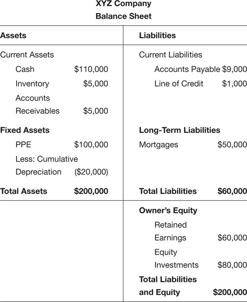

CHAPTER 8
The Balance Sheet in Action
How to Win Friends and Influence Bankers
What I’ve been showing you throughout this book is how to build a business that is a going concern, an accounting term that CPAs and bankers use to describe a well-run, profitable business that isn’t under threat of bankruptcy in the foreseeable future. A going concern is a business that is self-sustaining with predictable revenue streams, reasonable expenses, and adequate cash levels to pay its bills. Building such a business must be the goal of every small business owner/manager.
In order to help you build a going concern, I needed to take you through the building blocks of your financial dashboard—the Net Income Statement, the Cash Flow Statement, and the Balance Sheet—first, so that you could tell if the business you manage is, or has the potential to be, a going concern.
The Balance Sheet provides searing insight here. In this chapter I describe what happens to assets, liabilities, and owner’s equity when you apply the advice from previous chapters to the business you manage, and I’ll introduce you to just a few key ratios bankers look at that indicate whether the business’s debt levels are manageable or are entering a danger zone and need to be addressed fast.
The cool thing about the Balance Sheet is it captures the results of all the activities of running the business from the day the business opened its doors. That’s why bankers love it so much and why they home in on it first, when a business applies for a credit line or a long-term loan. And that’s what this chapter is about: how you can get a business loan from a bank.
Now you’re going to learn how to think like a banker. This will dramatically improve your chances of being approved for a credit line or a long-term loan.
Every small business needs a solid banking relationship, so it’s important to make your banker a strategic partner in the success of the business—maybe not your new BFF, but certainly an ally. Believe it or not, your banker is on your side!
I interviewed some very senior bankers to get their perspective, and this chapter will give you the inside scoop.
WHAT THE BALANCE SHEET NUMBERS REVEAL
You were introduced to the Balance Sheet in Chapter 7, and here it is again. This time we’re going to dig a little deeper into what the numbers on the Balance Sheet mean. To do so, let’s see what’s going on at XYZ Company (see Figure 8−1). As you learned, there are only three major categories: assets (current and fixed), liabilities (current and long term), and owner’s equity. We’ve added numerical values for each so you clearly see the relationship between them.

FIGURE 8−1
First, take a look at current assets, specifically, the cash position of the business. It’s half the value of total assets. XYZ has a very large cash position ($110,000). That cash is available right now to pay bills or to grow the business. It’s the most liquid asset the business has. But just looking at the cash position doesn’t tell us everything we need to know about the health of XYZ. We want to know whether all current assets taken together can cover current liabilities, if necessary. Adding up $110,000 in cash and $10,000 in inventory and accounts receivable, total current assets are $120,000. These are cash or convertible to cash within 12 months.
Now look at current liabilities. These are obligations the business has to pay back within 12 months. There are two categories here: accounts payable and line of credit. They total $10,000 in current liabilities. Every bank will want to know if XYZ Company has adequate working capital, current assets minus current liabilities, to cover current liabilities.
We figured out current assets are $120,000 and current liabilities are $10,000, so the business has $110,000 of working capital to keep the place humming. This is a nice strong position for the business. XYZ Company can pay off the mortgage and the current liabilities with just the cash that’s in the bank and still have $50,000 left over. Inventory looks a little low, though, so it’s possible that some of that cash will be used to build more inventory in the near future. The good news is, XYZ probably will not have to take on any debt to buy that inventory with such a healthy cash position.
The risk that this company will not be able to pay its expenses and satisfy its liabilities appears to be very low. We know the managers of this business have not taken on more debt than the business can safely and easily pay back.
If we wanted to see what owner’s equity, or net worth, is for this business, we can get there two ways: The first way is to add up retained earnings and equity investments, which total $140,000.
Owner’s Equity = Retained Earnings + Equity Investments
Owner’s Equity = $60,000 + $80,000 = $140,000
The second way we can derive this number is equally straightforward; we can simply deduct total liabilities from total assets. No surprise, we get to the same number: $140,000.
Total Assets – Total Liabilities = Owner’s Equity
$200,000 – $60,000 = $140,000
Be aware that if you open an accounting book, you may find this same equation in yet a different version, which we show below (you may remember it from the previous chapter). As you can see, in order to isolate owner’s equity, we have subtracted the value of the total liabilities from both sides of the equation to find the value of owner’s equity:
Total Assets = Total Liabilities + Owner’s Equity
$200,000 = $60,000 + Owner’s Equity
$200,000 – $60,000 = $140,000
In Chapter 7, when you were introduced to the equation Assets = Liabilities + Owner’s Equity (and its variations), the word “Total” was implied. Mathematically, all these equations are the same.
HOW TO IMPROVE YOUR BALANCE SHEET
Unfortunately, most small business owners do not have a Balance Sheet anywhere near as healthy as the XYZ Company’s. So, now that you understand more fully the significance of the Balance Sheet, let me offer some suggestions as to how you can improve your own.
To strengthen the Balance Sheet you either have to increase assets faster than liabilities or simply decrease liabilities with the same asset base. Here are three of the most important ideas you learned about in earlier chapters that will help improve your Balance Sheet.
Raise Your Gross Margin to 30 Percent or Greater
If you can raise your current gross margin to 30 percent or higher, the business will reach the breakeven point faster and require less cash from loans to grow the business profitably. The premium the business captures between the selling price and COGS is greater, so when a client pays an outstanding invoice, the receivable converts into a cash payment with a higher gross margin. That new, higher gross margin becomes more cash for the business—and the Balance Sheet will look better.
It’s also easier to finance the purchase of new inventory from the cash generated by the business instead of having to take out a loan to finance it. So as gross margin rises, cash increases on every sale. If the invoicing and collections process at the business is organized, then that higher gross margin locked up in accounts receivable converts into more cash more often and at a faster rate.
Invoice on a Timely Basis and Manage the Collections Process
If you do this as a weekly business discipline, the amount of cash you have in the business on the asset side of the Balance Sheet will be higher. It means the business generates more cash by itself, and needs less from loans or outside investors.
Cash in the bank will increase, accounts receivable will decrease, and—at least in theory—you will need less cash from credit lines to run the business. And as the line of credit (under liabilities) decreases, owner’s equity will increase. Accounts receivable decreases as customers pay the business, but cash increases by the same amount, so current assets might be the same, but as liabilities go down, owner’s equity goes up. This is what you want.
Keep All Expenses as Low as Possible for as Long as Possible
Keeping expenses low also helps the business reach the breakeven point faster and become self-sustaining sooner. Net revenue (with your new 30 percent or better gross margin) can cover all fixed and variable expenses—and again, there should be little need for outside sources of funding to run the business if customers pay their bills. Keeping expenses low should keep current liabilities in check and increase owner’s equity, assuming assets stay the same. If assets go up while liabilities go down, the business will be approaching Nirvana.
HOW A BANK EVALUATES A BUSINESS
When you take your car to be inspected, the car mechanic always goes through the same routine of making sure certain key indicators are functioning properly. The bank does the same thing when reviewing businesses before it approves a loan. A superstar in the banking world, who asked to go unnamed, explained the review process all her loan officers go through before the bank extends credit to a small business.
Here’s the step-by-step procedure:
• The bank tests to see if the business is a going concern. The key test of whether or not a business is a going concern is if it has a stable and loyal client base, predictable profitability, and predictable cash flow. First, the bank will look at the Net Income Statement of the business for at least a full year, maybe two, broken out month by month. It wants to see if the business is making a profit. You know how to do that too after reading the first three chapters of this book.
• Then the bank looks at net margin percentage. This is simply net income divided by net revenue multiplied by 100. You’ll find net income (bottom line) and net revenue (top line), also on the Net Income Statement. When you divide net income by net revenue you discover how much of each dollar of net revenue drops to the bottom line as profit. Remember, we said for the average corner grocery store, the percentage of net margin is typically only about 2 percent? Well, each industry has standards for net margin percentage and you should know what the standard is in your industry. That makes you an informed business banking client. If the net margin percentage for the small business you manage is higher than the industry average, you win points with any banker. (Here’s a URL you can use for a quick peek: http://pages.stern.nyu.edu/~%20adamodar/New_Home_Page/datafile/margin.html. No guarantees that your industry will be listed exactly as you conceive it, but it’s a pretty substantial list.)
• Next, the bank will look at gross margin to see if it is adequate to pay fixed and variable expenses. All expenses, including interest on both short- and long-term debt, are paid out of gross margin, as you may recall. This too is found on the Net Income Statement under variable expenses. If gross margin is 30 percent or higher, the bank will likely conclude you’ve done a great job at pricing and keeping the direct variable costs (the COGS) under control. Chapter 3 did a deep dive on what to do to raise gross margin if the business you manage isn’t there yet.
• The bank will also want to know if revenue will continue to grow or dry up. Reviewing the quality of your client base will be important in answering this question. In Chapter 5 we compared the client bases of Jane’s and Joe’s Hardware. One business has a diversified client base, the other did not. The bank will look at client purchasing behavior as well. Have your bookkeeper prepare a report that shows what percentage of clients have been with the business at least two years and how many are new clients who just purchased this calendar year. Do clients purchase on a regular basis and do they stay with your business for the long haul? Your banker knows customer loyalty drives repeat purchases and referrals to new customers. That drives net revenue. A series of Net Income Statements showing growth of net revenue gives the bank confidence in your future.
• The bank will look at how well the business converts outstanding invoices into cash. The Cash Flow Statement will provide good insights here. The bank will look at the cash flow cycle of the business, which we discussed in Chapter 5. The cash cycle charts the time lag between when the business has to pay its bills and when clients pay the business. My banking honcho referred to that as “financing the accounts receivable/accounts payable time gap.” The bank wants to see how effective you are in collecting money owed the business. That’s why we spent so much time talking about easy techniques for doing this in Chapter 6.
• The bank will look at the size of working capital. It will look at the Balance Sheet to compare assets to liabilities to determine if the business is able to pay the interest and principle on additional current or long-term debt, as we just did for XYZ Company. It will deduct inventory from current assets and see if the most liquid assets, namely cash and accounts receivables, are adequate to cover current liabilities. It’s a type of “what if” scenario testing to help the bank determine whether, in a worst-case scenario, the business will be able to meet its obligations even if inventory cannot be converted into net revenue and, ultimately, cash.
• Last but not least, the bank will look carefully at the key players in the business. It will want to know the history and background of the managers who run the day-to-day operations. Subject-matter expertise, years of experience, and longevity with the business all count favorably when asking for any kind of bank loan. Banks know that teams that have worked successfully together for years are more successful at running profitable businesses over time.
DURATION OF A LOAN AND THE ROLE OF COLLATERAL
Bankers are pragmatists. They want to know how the loan will be paid back, when it will be paid back, and what collateral is available—in the unhappy event the business fails—that can be liquidated (sold) to pay off the loan. Make your loan request easier for the banker to agree to.
Match the Expected Life of the Asset with the Length of the Loan
If you need to finance a current asset—the creation of inventory, for instance—you can finance it with a current liability, that is, a short-term loan, such as a credit line from a bank. Another short-term loan option is to apply for credit from the supplier making the inventory—but you would usually need to have an established, long-running relationship for this. In either event, this credit line would show up in the accounts payable line on the Balance Sheet.
The logic that holds true for financing short-term assets also holds true for long-term assets. If you’re buying a building that might have a 30-year useful life, you’d finance that with a long-term mortgage. This will show up on the Balance Sheet as a long-term liability.
Collateral Greases the Skids
If you already have a signed order from a customer who wants to buy this inventory, getting a loan from the bank or the supplier will be much easier. When I ran Bedazzled, Inc., I approached the bank for a Small Business Administration loan with the purchase order from a reputable local retailer in my hand. That reduced the risk for the bank dramatically. The order becomes collateral against the short-term debt.
Collateral is something that is convertible into cash, in this case, a receivable, that is pledged against a loan. It can be liquidated should the business default on paying the loan back. If the business taking out the loan can’t pay it back, the lender can sell the receivable to recover some or all of the remaining principal from the loan. Maintaining a strong Balance Sheet where assets are larger than liabilities will always make it easier to negotiate with the bank.
EIGHT MYTHS ABOUT DEALING WITH BANKS
The one thing my banking expert said that surprised me was how naive managers of even multimillion-dollar small businesses are when dealing with banks. Let’s make sure you are among the savvy set. Here are eight myths small business managers believe, followed by the truth from the banking expert’s point of view.
Myth #1: The bank just needs to know my business needs working capital. As long as my Balance Sheet is strong, the bank doesn’t care how the business uses the money from the loan.
Truth #1: Not true. The bank will ask you specifically how you intend to use the cash from the loan and whether or not it is short term. You need to have a thoughtful answer. If you don’t, the bank will fill the gap with negative assumptions. Bankers are institutionalized pessimists. Do you need the cash to build inventory? That’s called “supply chain financing.” Do you need to finance payroll while the business collects payments from customers who owe it money? That’s called “payroll financing.” Does the business need to invest in infrastructure to grow? That’s called “capitalization financing.” Why does the loan purpose matter? Because what the business is financing will determine the terms of the loan. Have a clear understanding of why the business needs the money and how that loan will strengthen the Balance Sheet for the business, that is, how the loan will help grow the assets of the business.
Myth #2: All bank loans are the same.
Truth #2: You knew this one wasn’t true. My source talked about “revolvers”—revolving lines of credit that need to be paid back every 30 days. They’re like a charge card but with a lower interest rate. Once the loan is paid back, the credit line is available again to the business—but only after another 30 days have passed before tapping the credit line again. Other loans, like those for purchasing or renovating office space, can be longer term with completely different payback schedules and interest rates. These loans act more like mortgage loans, though they tend to be shorter in duration with higher interest costs because there’s more risk associated with them.
Myth #3: Once the loan is approved, the bank doesn’t care what happens as long as the business pays the loan back.
Truth #3: Once a bank issues a loan, it becomes the silent partner to the business. Partners always want to know how the business is performing. You know all those requirements the business needed to meet to get the loan in the first place? The bank wants to make sure those financials for the business remain strong over time. The obligation of the business doesn’t end with paying the interest expense and the principal on the loan. That’s expected. The bank will require quarterly and annual reviews of the business’s financials too. Be prepared for this.
Myth #4: The business functions as a separate entity from the owner’s personal life, so the bank doesn’t care about the business owner’s personal Balance Sheet.
Truth #4: Not true. The bank takes a holistic view of the owners and managers of small businesses. That means even though the business may run as a separate legal entity, the bank might require personal guarantees of privately owned collateral (your house, your first-born, your wife’s jewelry, your vehicle) to release the loan to the business. If a business owner is a doctor, dentist, or lawyer, this is quite common.
Myth #5: If the business is showing a loss, the bank will still extend a loan if cash flow is positive.
Truth: #5: Nice try, but no. If the small business manager is trying to reduce taxes by showing a loss on the Net Income Statement, that’s a problem when applying for a loan from a bank. It’s important to show cash flow and profits. If you want a loan for $1.00, the bank wants you to show at least $1.35 in net income to prove you can cover the loan in a weak economic environment to reduce loan default risk. The challenge here is the tug of war with the IRS. Some small business owners try to front-load expenses to reduce profits so they can pay less in taxes (and this can be perfectly legal). Just remember that tax reduction strategies in the short term may work against the business if you want to apply for a loan with a bank or if you eventually want to sell a business.
Myth #6: The bank does not look at retained earnings on the Balance Sheet.
Truth #6: Retained earnings is a number scrutinized by a lender. Retained earnings is found in the owner’s equity portion on the Balance Sheet. It connects the Net Income Statement to the Balance Sheet because this number reflects the cumulative net income the business has generated since its inception. The small business manager can choose to retain the net income—the profit—in the business or to distribute it. There is a problem with distributing all of the earnings, however, instead of keeping some of it in the business (as retained earnings) for future expansion. Again, the $1.00 loan/$1.35 ratio holds here. Let that ratio be your guide on how much of the business profits should be distributed at the end of the year. If you are planning to apply for a loan later on, keep as much cash and retained earnings in the business as you can before you apply. And know that it is a common requirement from commercial lenders that you keep the cash and the retained earnings on the Balance Sheet for at least 90 days after the loan proceeds are received. Distributing profits to owners is perfectly legal, but if you take all the cash out of the business, the bank will not grant your loan.
Myth #7: The bank only cares about my business relationship.
Truth #7: The bank cares about all your banking needs. If you have sizable personal accounts elsewhere, offering to bring them to the lending bank can give you not-insignificant negotiating leverage when applying for a business loan.
Myth #8: If the business I manage does a lot of transactions with the bank, I’m considered a large customer.
Truth #8: Your banking relationship is primarily measured by the size of the balances the business keeps in the bank—not the number of transactions that flow through the account. The bank makes money on deposits, not just transactions. The higher the balances the business keeps at the bank, the more leverage it has with the bank.
Now that we’ve dispelled some myths, let me offer you two lists: one of do’s and one of don’ts. They may seem like a lot to understand, but they’re important. Following them has the potential to save you a great deal of time and money.
Do’s When Working with a Bank
• Know what a “going concern” is and how to prove the small business you manage is one of them.
• Develop a deep understanding of your client base. Is it diversified? Stable? Predictable?
• Hire a crackerjack bookkeeper to accurately capture all the transactions going on in the business on a weekly and monthly basis. This information has to be accurate, timely, and complete or else the reports that come from it won’t fully reflect what’s really going on in the business. If you don’t know how to find a great bookkeeper, ask your accountant.
• Have accurate and complete monthly and annual financials: Income Statement, Cash Flow Statement, and Balance Sheet.
• Be sure you have a personal Balance Sheet. Keep business and personal separate, though often the bank will look at both personal and business financials in order to make an informed decision about a loan. Include your resume so the bank can see your experience.
• Know the cash conversion cycle—the time lag between when the business pays the suppliers and when in turn it gets paid by customers.
• Know exactly why you are applying for a loan and how exactly do you intend to use the funds if the loan comes through. Be able to show how the loan will be paid back.
• Know the difference between financing working capital for a going concern and start-up capital for a business that has not reached going-concern status.
• Know what time of year the business will need cash from a credit line and apply for the line at least six months before the cash crunch hits. Reread the section called “Budgeting Cash the Easy Way” in Chapter 5 if you’re stumped.
Now on to the don’ts.
Don’ts When Working with a Bank
• Don’t fight with the bank if you owe it money. You will lose.
• Don’t assume all loans are for “working capital.” Some are for building inventory, paying payroll, etc. Be specific on what the loan’s purpose is.
• Don’t even think about approaching the bank without updated financial statements (Net Income Statements, Cash Flow Statements, and Balance Sheet). This will seriously damage your credibility and you might not get a second chance.
• Don’t use tax returns as a substitute for monthly and annual financial statements. Tax returns only reveal what the business declares in income for tax purposes. It’s not meaningful to a creditor like a bank.
• Don’t present financial statements that are incomplete or inaccurate. Be sure your accountant checks them before you send them to the lender.
• Don’t take on debt for the business and your personal life at the same time. The bank cares about both.
• Don’t ask the bank to loan the business money because you will not do your job. (Got your attention with that one, didn’t I?) Too many small business owners/managers would rather pay interest to the bank than pick up the phone and call customers who owe them money! The bank is not there to pick up your slack. Reread Chapter 6 to learn how to collect the money that is owed to your business.
* * *
Managing a small business is not for the faint of heart. There are seasons in a business when it makes perfect sense to take on debt to expand the customer base, hire crackerjack experts, or finance cash flow while waiting for customer payments. The Balance Sheet holds the key to whether the business you manage can comfortably take on more debt without putting the business at risk. If total assets are twice the size of total liabilities, the Balance Sheet is strong and owner’s equity is positive. If current assets are twice the size of current liabilities, the business is probably liquid enough to handle its short-term cash needs. If assets are growing faster than liabilities, the net worth of the business is growing. The cumulative effect of managing the small business is bearing fruit.
In the next chapter, I’ll put your entire financial dashboard together so you can drive the small business to grow profits, improve cash flow, and increase owner’s equity. You already know more than most small business managers. Congratulations.
KEY TAKEAWAYS
 The Balance Sheet is the cumulative report for everything that has happened in the business until the present. It’s the state of the business at a moment in time.
The Balance Sheet is the cumulative report for everything that has happened in the business until the present. It’s the state of the business at a moment in time.
 The Balance Sheet is an indispensable statement on your financial dashboard. Nowhere else are all assets, liabilities, and owner’s equity captured.
The Balance Sheet is an indispensable statement on your financial dashboard. Nowhere else are all assets, liabilities, and owner’s equity captured.
 A strong Balance Sheet is characterized as having a strong and liquid asset base that can comfortably cover liabilities (obligations of the business).
A strong Balance Sheet is characterized as having a strong and liquid asset base that can comfortably cover liabilities (obligations of the business).
 As gross margin and cash flow improve, and total expenses stay below the breakeven point, the Balance Sheet gets stronger and owner’s equity improves. Lenders always look favorably on businesses with strong Balance Sheets.
As gross margin and cash flow improve, and total expenses stay below the breakeven point, the Balance Sheet gets stronger and owner’s equity improves. Lenders always look favorably on businesses with strong Balance Sheets.
 If you are managing a small business, you must be able to print out the Net Income Statement, Cash Flow Statement, and Balance Sheet for the business every month and at the end of the year. A great bookkeeper can make this an easy task. Don’t procrastinate.
If you are managing a small business, you must be able to print out the Net Income Statement, Cash Flow Statement, and Balance Sheet for the business every month and at the end of the year. A great bookkeeper can make this an easy task. Don’t procrastinate.
 Borrowing money is not a bad thing. Well-run businesses use the cash from short- or long-term loans to build up their assets.
Borrowing money is not a bad thing. Well-run businesses use the cash from short- or long-term loans to build up their assets.
 Make the bank your partner. It cares about managing risk, but it also cares that the small business you manage succeeds. The loan process may look different at each lending institution, but the analytic process is very similar. Now it’s not a mystery to you.
Make the bank your partner. It cares about managing risk, but it also cares that the small business you manage succeeds. The loan process may look different at each lending institution, but the analytic process is very similar. Now it’s not a mystery to you.